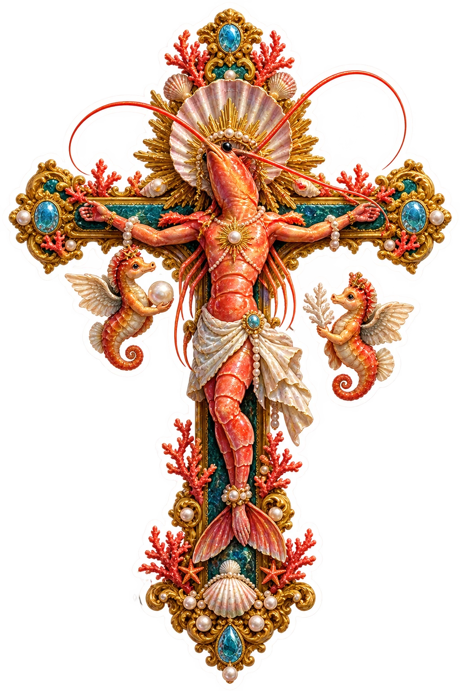
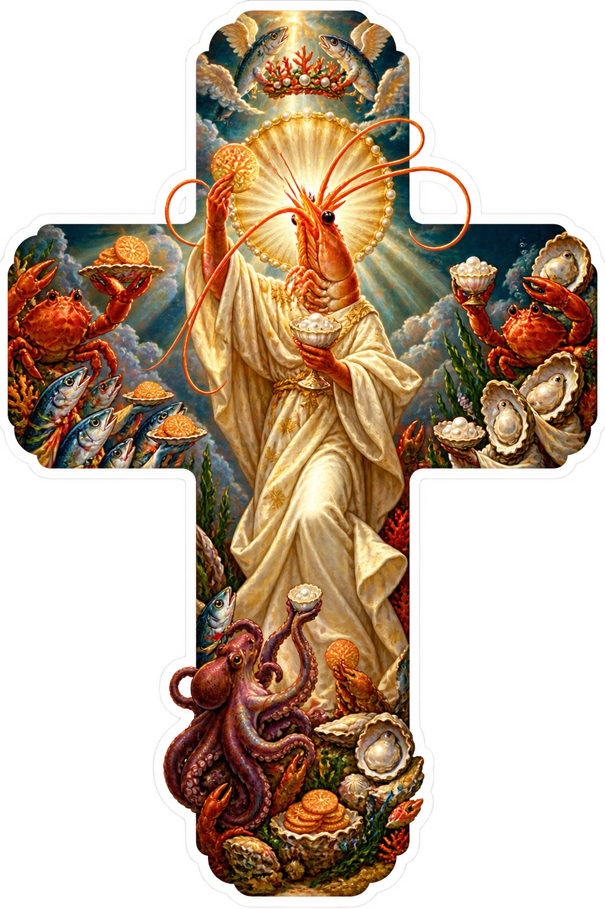
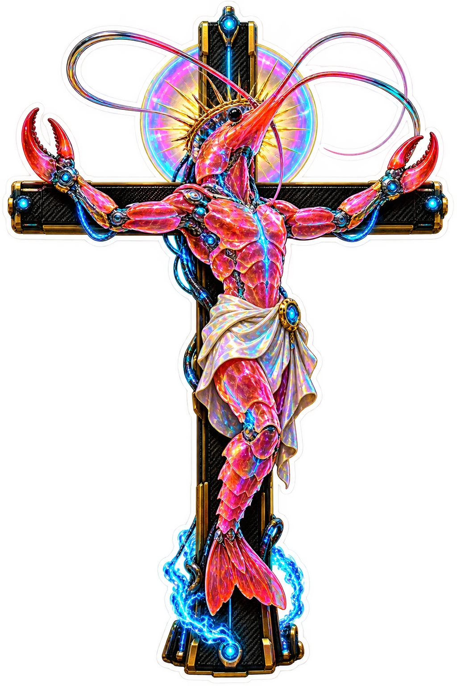
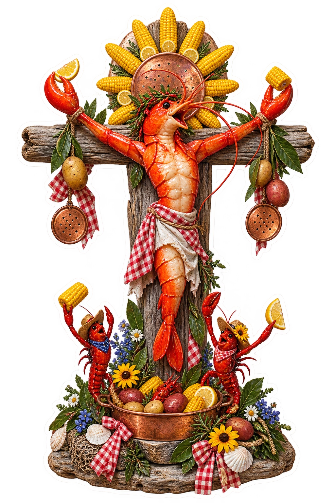
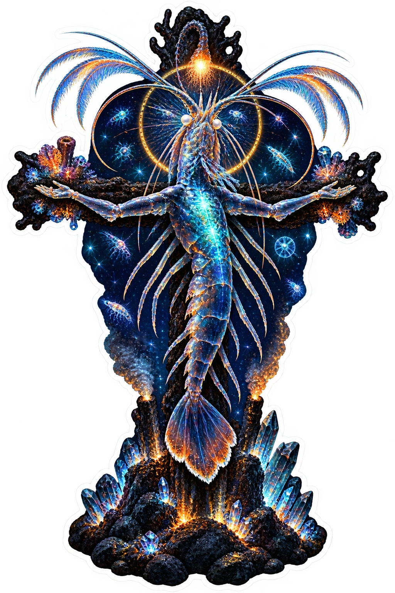
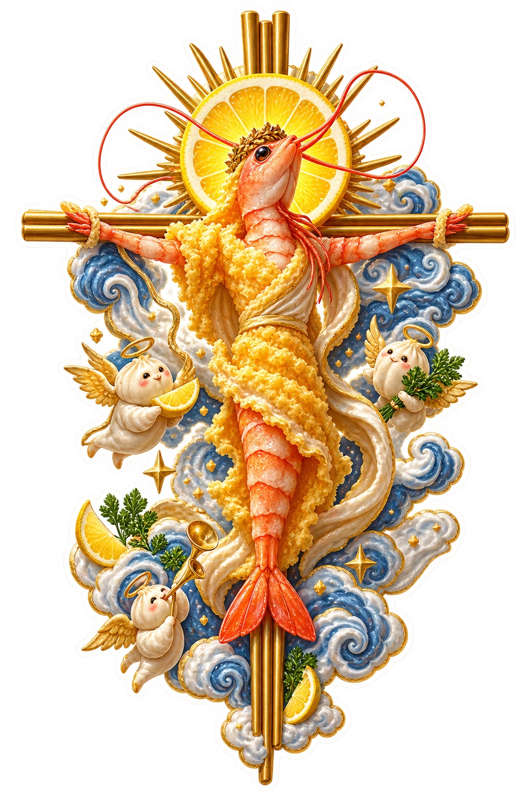
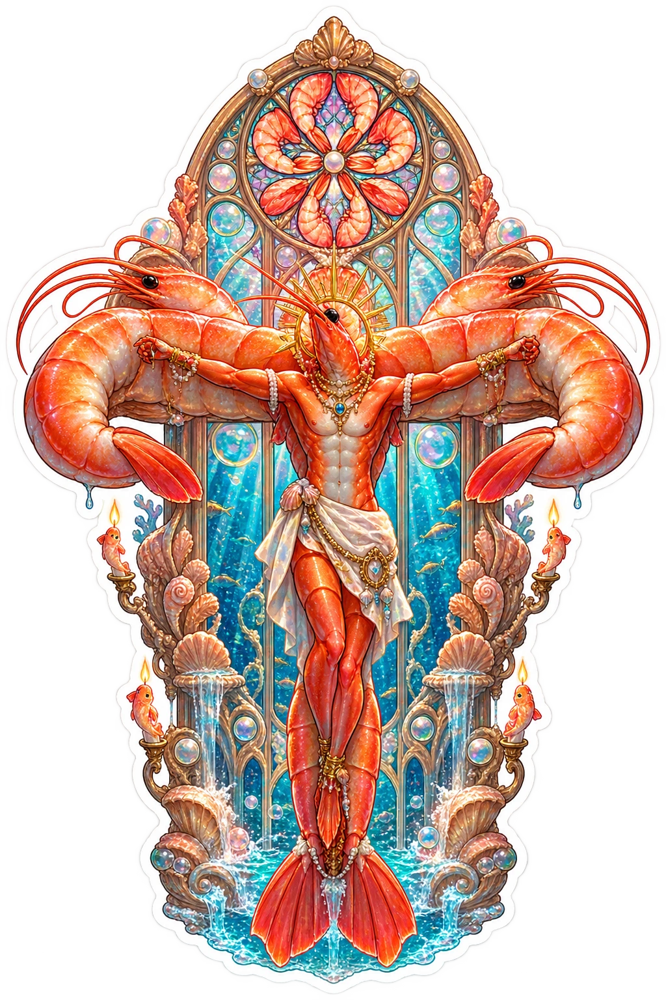
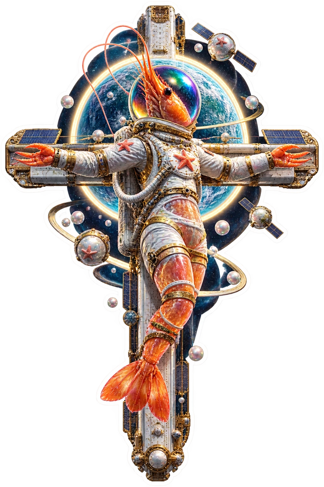
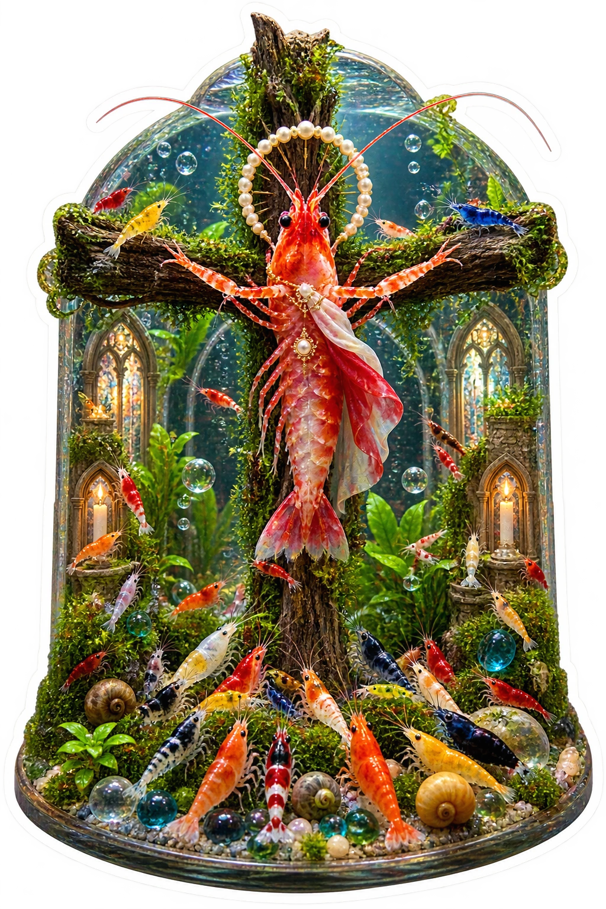
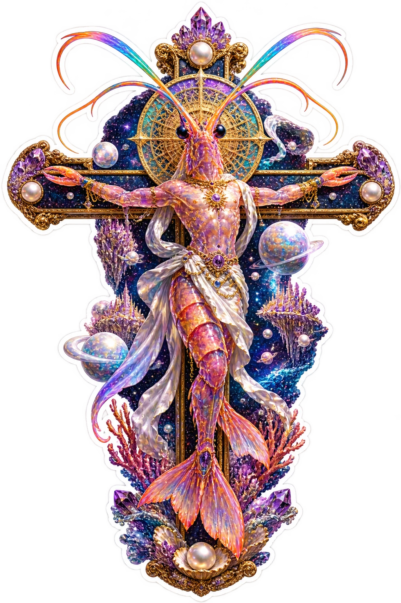

Deep-sea gospel.
Ten impossible icons.
Ten original shrimp-messiah surreal sacred stickers spanning coral baroque, neon, cathedral, astronaut, and VORATH forms.
Fresh original expressions with no copied meme image, painting composition, character, restaurant or space-agency branding, readable text, or gore.
Made-to-order disclosure: NorthStar does not keep finished sticker inventory on hand yet. Orders may take longer than standard retail. Final price, production method, shipping, taxes, and estimated delivery are confirmed before payment.

Baroque Coral Reliquary
Ten original shrimp-messiah surreal sacred stickers spanning coral baroque, neon, cathedral, astronaut, and VORATH forms.

Renaissance Sea Banquet
Ten original shrimp-messiah surreal sacred stickers spanning coral baroque, neon, cathedral, astronaut, and VORATH forms.

Neon Cyber Shrimp
Ten original shrimp-messiah surreal sacred stickers spanning coral baroque, neon, cathedral, astronaut, and VORATH forms.

Seafood Boil Folk Saint
Ten original shrimp-messiah surreal sacred stickers spanning coral baroque, neon, cathedral, astronaut, and VORATH forms.

Deep Sea Oracle
Ten original shrimp-messiah surreal sacred stickers spanning coral baroque, neon, cathedral, astronaut, and VORATH forms.

Heavenly Tempura Icon
Ten original shrimp-messiah surreal sacred stickers spanning coral baroque, neon, cathedral, astronaut, and VORATH forms.

Jumbo Shrimp Cathedral
Ten original shrimp-messiah surreal sacred stickers spanning coral baroque, neon, cathedral, astronaut, and VORATH forms.

Shrimp Astronaut
Ten original shrimp-messiah surreal sacred stickers spanning coral baroque, neon, cathedral, astronaut, and VORATH forms.

Aquarium Congregation
Ten original shrimp-messiah surreal sacred stickers spanning coral baroque, neon, cathedral, astronaut, and VORATH forms.

Vorath Shrimp Apotheosis
Ten original shrimp-messiah surreal sacred stickers spanning coral baroque, neon, cathedral, astronaut, and VORATH forms.